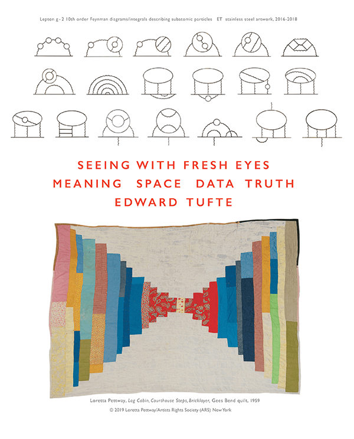

7 Data Visualization with R
7.1 What is Data Visualization?
Data visualization is to deliver a message from your data. It is like telling a story using the chart or data applications. Sometimes the data is huge or the story to too long to tell. Visualization provides an ability to comprehend huge amounts of data. The important information from more than a million measurements is immediately available.
Visualization often enables problems with the data to become immediately apparent. A visualization commonly reveals things not only about the data itself but also about the way it is collected. With an appropriate visualization, errors and artifacts in the data often jump out at you. For this reason, visualizations can be invaluable in quality control.
Visualization facilitates understanding of both large-scale and small-scale features of the data. It can be especially valuable in allowing the perception of patterns linking local features.
Visualization facilitates hypothesis formation, inviting further inquiries into building a theory (Colin Ware 2012). It is exploratory data anlaysis (EDA) but can also provide the tools for hypothesis confirmation.
7.2 Learn to read data
Edward Tufte is one of the earliest data scientists emphasizing visual thinking. He postulates that one should first learn to read data, before moving on to visualize. He suggests training the visual thinking, then preparing the educated eyes. His newest book is titled SEEING WITH FRESH EYES: MEANING, SPACE, DATA, TRUTH, vividly testifying his philosophy of connecting the human perception with the data message.

For Tufte, number one thing to learn about data visualization is to discard the default.
“If you’re not doing something different, you’re not doing anything at all.” - Edward Tufte
7.3 References:
Graham Williams 2011. Data Mining with Rattle and R: The Art of Excavating Data for Knowledge